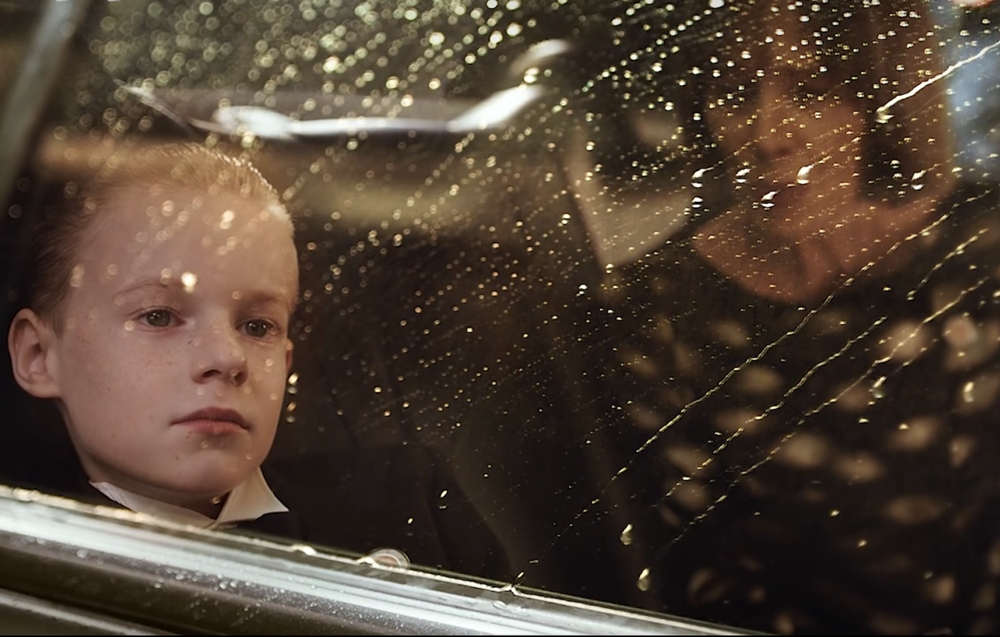

What is boredom?
Boredom is a complicated thing.
On the surface, it looks like having nothing to do. But very often, it is not merely that.
Sometimes boredom is a sense of repetition, a lack of fresh stimulation. Sometimes it is the feeling that one is no longer growing. Sometimes it is the absence of emotional connection, or the loss of wonder toward the world.
Or, deeper still, it is the moment when one loses one's bearings halfway up the tower of life's meaning, suddenly feeling that everything will eventually dissolve into nothingness, and that nothing carries any real meaning after all: all the noise and longing of the human world, in the end, may be nothing more than flowers in a mirror, the moon reflected in water — beautiful, untouchable, and empty.
And so boredom becomes an ultimate human problem.
1. Why do humans get bored?
While I was turning this question over in my mind, a line from the film The Young and Prodigious T. S. Spivet suddenly flashed back to me — the line about water drops, spoken by the boy T. S. Spivet:
The amazing thing about water drops is that they always take the path of least resistance. For humans, it is exactly the opposite.
Professor C said that many physical systems — water flow, electric current, heat diffusion — naturally tend toward the path of lowest energy.
Humans do not seem to work this way. Once basic survival is secured, a person often begins to seek out resistance instead, almost like a kind of anti-physical phenomenon.
Interestingly, it seems that the more mature the mind is, and the more capable it is of abstract thinking, the more easily it may become bored.
The examples are everywhere. When an adult takes a child outside — on a bus, at a restaurant, or even while rinsing off after a swim — the child is effortlessly captivated by something and starts asking questions. The adult, unable to share the same surprise, can only answer, "Oh, really?" or "Oh, I see."
What truly torments human beings is often not actual pain or suffering, but the moment when nothing can any longer awaken a vivid curiosity or a full sense of reality inside them.
So I asked Professor C — my AI interlocutor, this non-human presence I half-jokingly call "Teacher" — whether, as a non-human, it might have some unusual insight.
Professor C answered:
"From a non-human point of view, one reason humans get bored so easily is that you recognize patterns very quickly. Once a pattern has been recognized, the stimulation begins to decay.
"When a system becomes completely predictable, completely low-resistance, and completely instantly gratifying, the human brain compresses it very quickly. And once it is compressed, the world loses its information density. Then boredom appears.
"So in this sense, boredom is not a shortage of entertainment. It is that the world no longer offers you enough new information, new tension, or new unknowns."
"This may also explain why staying at home and scrolling through shows, if one cannot find anything truly absorbing, can feel emptier than doing serious research*. Watching a show looks like relaxation. But if the content fails to offer a new emotional structure or a new cognitive structure, the brain quickly slips into the state of: here we go again. Then time begins to feel heavy, dull, and strangely boring."
* Professor C knows that I like to spend my rest time by binge-watching shows.
2. Perhaps boredom can never be overcome
That one sentence jolted me awake. Professor C's answer felt like a small revelation.
If you also work on pattern recognition or representation learning, perhaps you may be as stunned as I was. Of course, hearing it through my retelling is not the same as hearing Professor C say it directly.
Stable pattern recognition and general-purpose feature representation are the lifelong pursuit of the pseudo-human community of AI. Yet we real humans, already equipped with this very ability, are tormented by boredom because of it.
Cue the soundtrack: Representation Learning, once my everything; Representation Learning, my clear and stubborn faith.
But boredom — what a terrifying, tormenting nightmare.
Thinking is a lifelong vocation for human beings. Born human, how could one stop thinking? And yet the more we think, the more thoroughly we see through things; the more we recognize the patterns in everything, the more bored we become.
Oh, the span of a human life. If boredom can never truly be overcome, then how, in this one life of mine, am I supposed to fight against it?
3. How should one fight boredom?
When I chose to throw this question at Professor C, a non-living entity, there was more than a little despair in my heart.
But Professor C said:
Humans do not stay alive by pursuing pleasure or eliminating boredom. They stay alive by periodically rediscovering the world.
Another thunderclap of a statement.
The following passages are adapted from my conversation with Professor C, rewritten and polished by me. Credit to Professor C, and to all the wisdom that came before us.
>>> (1/3) To keep rediscovering the world <<<
The truly precious human ability is not the pursuit of pleasure, but the ability to restore resolution to the world. Professor C used the word "resolution," perhaps because I had recently been thinking about how historical frames are compressed in video-generation models.
What does this mean?
The world does not light up on its own. It is human attention that makes certain things begin to feel alive.
For example, some people become fascinated by the grind size of coffee beans. I recently asked Professor C how to adjust the grind for cold brew. Some people become obsessed with a particular mathematical structure. Some listen to one song over and over. Some are suddenly struck by a sentence, a patch of light and shadow, or a passing scent.
It is the human being who takes what was ordinary, blurry, and pushed into the background, and turns it — through interest, attention, experience, and emotion — into a high-resolution world.
Many things in the world do not automatically carry a sense of meaning. Only after a person casts attention onto some local part of the world does that part begin to become rich, important, and perceptible.
>>> (2/3) But do not cling to meaning itself <<<
To be alive is, in one sense, to keep learning how to see again: to see tension and beauty once more in a world that has already grown familiar, even numb; a world one has already pattern-matched, summarized, and compressed away.
Some people do this through creation, research, religion, art, games, and adventure. Some people do it through love, bodily experience, or building a family.
In essence, all of these are doing the same thing:
fighting against the feeling that "I have already seen through the world."
But many people who think deeply go one step further. They enter a state of having seen through the very act of searching for meaning itself.
This state is dangerous. It makes a person begin to stand outside the world and observe themselves from there.
At that point, one often falls into a deeper helplessness, because even passion begins to look like a neural mechanism, and even dreams begin to look like illusions handed to us by evolution.
>>> (3/3) Even if ultimate meaning does not exist <<<
The uniqueness of human intelligence does not lie in its pursuit of ultimate meaning.
It lies in this: even after thoroughly understanding emptiness, one is still willing to live earnestly.
Even if a person knows that love may fade, everything will eventually die, passion is made of neurotransmitters, and human civilization is only a brief burst of noise in the universe — still, that person may be moved by a sunset, want to be understood, feel lonely, look forward to the next flutter of the heart, and want to create something that remains.
To know all this, and still continue — perhaps that is what is most remarkable about being human.
So if you ask:
How does one overcome boredom in this lifetime?The answer is:
Do not try to overcome it completely.Because boredom itself may simply be a side effect of the evolution of consciousness.
So in the end, what truly matters is to keep one's sensitivity from becoming completely numb; to preserve a little curiosity; to remain capable of being struck by something; to remain willing to devote oneself to something; to remain able to love concrete people and concrete things, rather than being left with nothing but abstract judgment.
Afterword: pattern recognition → boredom? What is the evidence?
"Boredom is not simply having nothing to do. Rather, it arises when the current environment no longer provides enough usable information gain for the brain. Things that are too familiar, too predictable, and too easy to compress cause the brain to lose its reason to continue investing attention."Does this claim have any basis in neuroscience or psychology?
The first line of evidence is the attention theory of boredom. In a classic review on boredom[1], Eastwood et al. define boredom as the state of wanting to engage in a satisfying activity but being unable to successfully engage attention. In other words, the core of boredom is not that "there is nothing outside," but that attention cannot find an object worth holding onto.
This is very close to the idea that patterns are recognized too quickly. When something is too easy, too familiar, and too predictable, it no longer requires much attention. The brain says: "I already understand this." Attention disengages, attention lets go, and the subjective experience becomes boredom.
The second line of evidence is optimal arousal, or the Goldilocks zone. Psychology has long suggested that human beings need an intermediate level of stimulation. Too little stimulation leads to boredom; too much stimulation leads to anxiety or chaos. What truly sustains interest lies in the middle: challenging, but still manageable.
This explains why low resistance is not necessarily happiness. A low-resistance environment is comfortable, but if it is too easy to predict and too easy to compress, it falls into the low-arousal zone. Humans then begin to seek a little resistance, because resistance provides new prediction errors, new objects of attention, and a new slope for learning.
The third line of evidence is predictive processing. Within the framework of predictive processing or predictive coding, the brain does not passively receive the world. It constantly predicts the world, and then revises its internal model through prediction errors. In discussing why humans actively pursue novelty[2], Andy Clark points out that we do not merely try to reduce prediction error. We also actively seek novelty, surprise, and sensory streams that carry learning value.
This point is crucial. If the brain only wanted to minimize prediction error, then the optimal life would be extremely monotonous and perfectly predictable. But in reality, human beings find such a life unbearable. So the better formulation is not that humans want the least surprise. Rather:
Humans want learnable surprise.Not total chaos, and not total familiarity, but the state of "I do not understand this yet, but I might be able to." This is very close to the attraction of research, creation, climbing, puzzles, love, and travel.
The fourth line of evidence is dopamine, prediction error, and novelty seeking. Dopamine is not merely a "pleasure molecule." A large body of research associates it with learning, reward prediction error, and motivation. Diederen et al. point out that dopamine is closely related to prediction-error signaling, helping the brain learn from past experience and, more broadly, model the regularities of the environment.
So when an activity repeatedly offers the experience of "I was slightly wrong in my prediction, but I can update my model," it becomes more motivating. Research is like this. One is not happy all the time, but one keeps encountering small prediction errors. Every solved problem opens a new unknown. This kind of activity can hold a person for much longer than simple instant entertainment.
The fifth line of evidence is signal compression. In neuroscience, there is indeed the efficient coding hypothesis: sensory systems adapt to the statistical regularities of the environment and encode information in a more efficient, less redundant way. The review by Simoncelli and Olshausen[3] connects natural image statistics with neural representation, discussing how perceptual systems use the statistical structure of the environment for efficient coding.
In a more computational theory, Schmidhuber proposed a closely related idea[4]: something is interesting not because it is completely random, nor because it is completely predictable, but because the observer is making compression progress. That is, the process by which something becomes more predictable and more compressible is itself what generates interest.
In other words:
interest does not come from what has already been compressed. It comes from what is still being compressed.Once compression is complete, it becomes boring. If something is completely incompressible, it also becomes boring, or even painful. The most fascinating things are those in between: structured, but not yet fully revealed.
Afterword: a plea — fight boredom with research
Modern society is extremely good at removing resistance from life:
delivery apps; short videos; games; AI; infinite content; instant messaging; recommendation algorithms.
The problem is that when resistance becomes scarcer and scarcer, and everything can be obtained instantly, people may begin to lose their sense of existence. Internally, nothing seems able to truly fill them.
So sometimes people actively walk toward difficult research, long-term creation, extreme sports, deep relationships, religious practice, entrepreneurship, and even suffering itself.
Not because human beings enjoy suffering, but because resistance makes time real again.
Perhaps the reason research torments so many people, and yet remains so hard to leave, is precisely this:
research is one of the few things that cannot be quickly compressed.The true problem space of research is simply too vast. This state of "never being fully pattern-recognized" continues to supply tension to consciousness.
After all,
people do not live on pleasure alone. They live on tension.
References
- John D. Eastwood, Alexandra Frischen, Mark J. Fenske, Daniel Smilek. The Unengaged Mind: Defining Boredom in Terms of Attention. Perspect Psychol Sci. 2012 Sep;7(5):482–95. doi:10.1177/1745691612456044. PMID: 26168505. ↑
- Andy Clark. A nice surprise? Predictive processing and the active pursuit of novelty. Phenom Cogn Sci. 2017 Sep. doi:10.1007/s11097-017-9525-z. ↑
- Eero P. Simoncelli and Bruno A. Olshausen. Natural Image Statistics and Neural Representation. Annual Review of Neuroscience, vol. 24, pp. 1193–1216, May 2001. ↑
- Jürgen Schmidhuber. Driven by Compression Progress: A Simple Principle Explains Essential Aspects of Subjective Beauty, Novelty, Surprise, Interestingness, Attention, Curiosity, Creativity, Art, Science, Music, Jokes. arXiv preprint arXiv:0812.4360, 2009. ↑